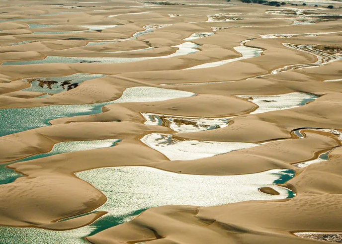

Localização:
Parque Nacional dos Lençóis Maranhenses
Melhor época:
O melhor período para visitar o Parque Nacional dos Lençóis Maranhenses vai de maio a setembro
Info:
O Parque Nacional dos Lençóis Maranhenses é um paraíso ecológico com 155 mil hectares, formado por dunas, rios, lagoas e manguezais. Apesar de parecer um deserto, a região recebe chuvas que criam lagoas naturais, como a Lagoa Azul e a Lagoa Bonita, famosas pela beleza e banho. Destacam-se também os povoados de Caburé, Atins e Mandacaru como atrações imperdíveis.
